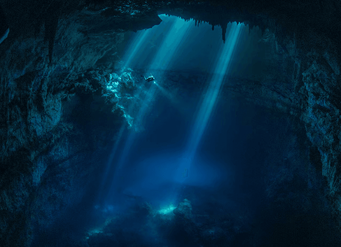
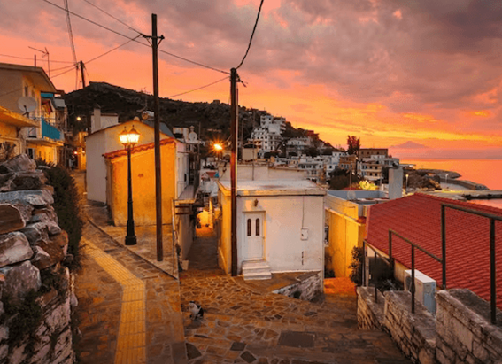

NATIONAL GEOGRAPHIC
Maritime archaeologist Mensun Bound delves into 30 years of underwater adventures
TRAVEL
How did you first get started in maritime archaeology?
As a kid, I’d write letters to George Bass, an American professor of underwater archaeology who used to contribute to National Geographic magazine. He actually responded, and we carried on this correspondence for many years me begging him to take me along on one of his expeditions, him always finding a reason not to. Until, many years later [following Mensun’s studies in ancient history and archaeology], he asked if I could be on the Greek island of Kos in a week’s time. I didn’t ask any questions. This was my open door, and I walked through it.
What sparked your interest in shipwrecks, in particular?
While working for George off the coast of Turkey, we had some wonderful discoveries, including ancient shipwrecks. That’s what really got me into it. I then came back to England to work on the Mary Rose, the great ship of Henry VIII that sank in the Solent [a strait north of the Isle of Wight], before starting my own team.
What was your first big discovery?
Alexander McKee, the man who found the Mary Rose, told me about another diver he’d met on the Italian island of Giglio who’d stumbled upon an ancient wreck. Joanna now my wife and I went to see him, and I knew then that I’d blundered into something of outstanding archaeological interest. We spent the next four years excavating; what we found was a ship from 600 BCE. What did that lead to? The Giglio wreck was the start of 32 years of work, sometimes on three to five wrecks a year, from Southeast Asia to the Caribbean. I also started the first academic maritime archaeological unit in England at Oxford University. But of course, the crowning moment was last year’s discovery of the Endurance [the lost vessel of Antarctic explorer Sir Ernest Shackleton, found at the bottom of the Weddell Sea 107 years after it sank].
Is that the highlight of your career?
Yes, that was the absolute high point the search took 10 years and was incredibly expensive. I’ve also run the biggest ever underwater explorations and, on a job in Vietnam, we used saturation diving [involving staying at extreme depths for long periods] for the first and only time in underwater archaeology. I love being at the forefront, the cutting edge.
How did you prepare for the Endurance expedition?
I buried myself in archives to narrow down a search box, which ended up being 107 sq nautical miles, and brought together a diverse group of specialists. The first search ended in failure; we lost an AUV (autonomous underwater vehicle) worth millions. When we eventually did find the Endurance, it was within the original search box; if we hadn’t lost the AUV, we’d have found the wreck in 2019.
What’s most challenging about maritime archaeology?
You don’t really have an area of expertise. My interest is ancient ships, but you take what comes. Every time the phone rings, you have to go on a steep learning curve and make yourself an expert. A discipline of mind is very important you’ve got to enjoy learning.
Does it ever get dangerous?
It’s not just hazardous, it’s a fatal environment. If things go wrong, the ultimate cost is life, and that’s what ties you up in knots inside. You don’t relax until you count every diver back, and they’ve all got their fingers, and they’re all breathing. That’s the best thing about robotic archaeology, but danger is quite intoxicating, like driving a fast car; you want to go faster.
Comments :
- john Very good
- john Very good
Leave a Reply
Your email address will not be published. Required fields are marked*
Related posts:
-
Beyond the Western myth of exploration lies a rich and often overlooked history
There is only one museum along the old Oregon Trail that tells the story of America’s westward expansion through the eyes of those being expanded into. In a corner of Oregon bordered by Washington and Idaho
View article -
Exploring Ikaria, Greece's island of immortals
In the golden haze of a September afternoon, my pulse races as I scramble over wind-scarred granite rocks and drop into lichen-draped holm oak woods in Magganitis on Ikaria’s southwest coast
View article -
 One of Earth's loneliest volcanoes holds an extraordinary secret
One of Earth's loneliest volcanoes holds an extraordinary secretWhen Emma Nicholson peeked into the crater of a remote volcano in the southern Atlantic Ocean, the British volcanologist gazed on a scene no human has seen before. The crater’s walls dropped steeply
View article